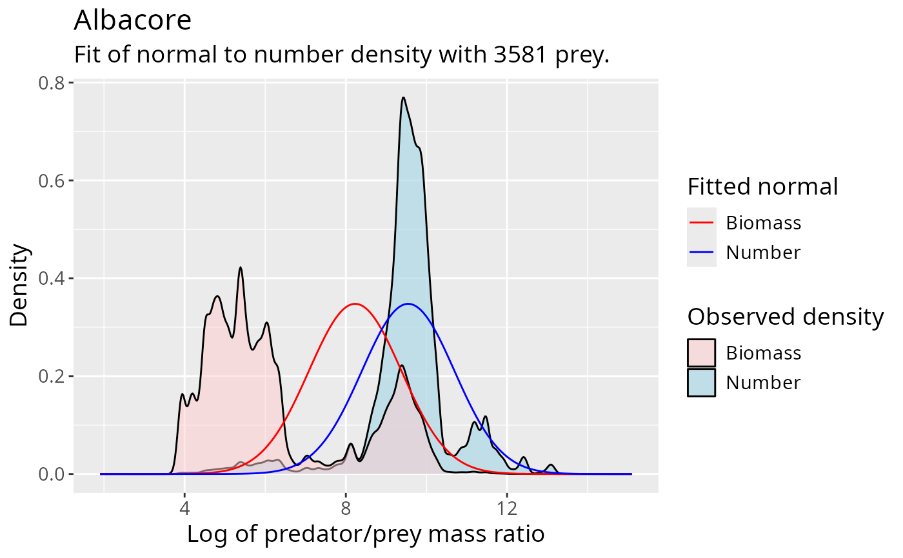
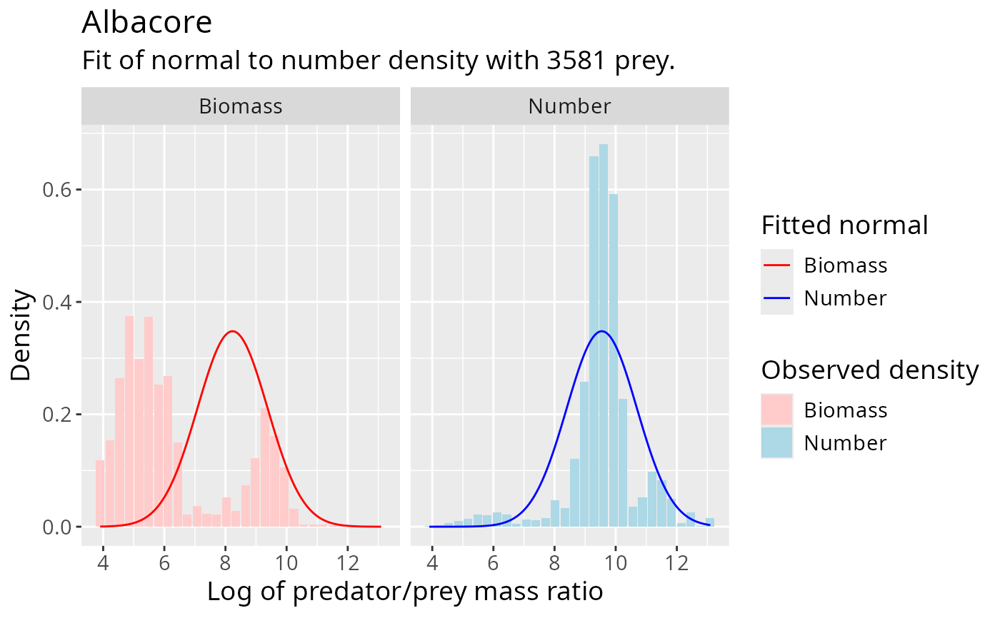
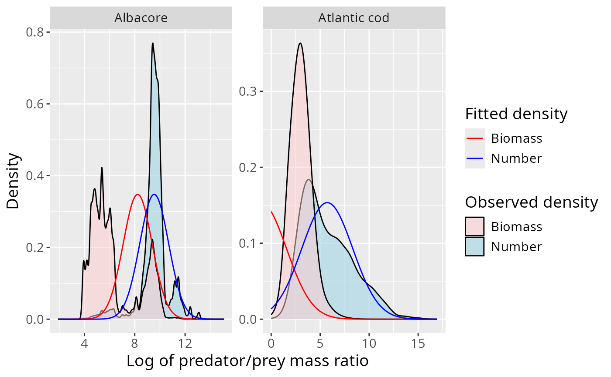

Overlays a fitted distribution on empirical prey-number and prey-biomass distributions for one or more predator species.
Usage
plot_log_ppmr_fit(ppmr_data, fit, type = c("kernel", "histogram"))Arguments
- ppmr_data
A data frame accepted by
validate_ppmr_data().- fit
A one- or multi-row fit data frame accepted by
validate_fit(). Only species in this object are plotted. Each row'smin_w_preddetermines which observations are included.- type
For a single fit row, either
"kernel"(the default) for kernel density estimates or"histogram"for normalized histogram bars. A multi-species plot currently always uses faceted kernel densities.
Value
A ggplot2::ggplot() object.
Details
The observed number distribution weights rows by n_prey; the observed
biomass distribution weights them by n_prey * w_prey. For every fit row,
transform_fit() is used to obtain fitted curves at power = 0 (number) and
power = 1 (biomass), whatever weighting was originally used for fitting.
For type = "kernel", ggplot2::geom_density() chooses the smoothing
bandwidth. For a one-species histogram, observations are placed in 30
equally spaced log-PPMR bins and each set of bars is divided by its total
weight and bin width, so its area is one. The curve grid for kernel plots is
based on the 0.1% biomass-weighted and 99.9% number-weighted quantiles, with
padding. Multi-species results use one facet per predator species with free
scales.
These plots are diagnostics rather than goodness-of-fit tests. In particular, the empirical kernel density depends on its automatically chosen bandwidth.
See also
fit_log_ppmr() to estimate the fit and get_density() to obtain
the curve values directly. See
vignette("PPMR_distributions", package = "mizerStomach") for guidance on
interpreting the diagnostic.
Examples
# Plot a normal fit for one species
fit <- fit_log_ppmr(barnes_data, "Albacore", distribution = "normal")
plot_log_ppmr_fit(barnes_data, fit)

# Plot with histogram style
plot_log_ppmr_fit(barnes_data, fit, type = "histogram")

# Plot fits for multiple species
fit2 <- fit_log_ppmr(barnes_data,
c("Albacore", "Atlantic cod"),
distribution = "normal")
plot_log_ppmr_fit(barnes_data, fit2)
